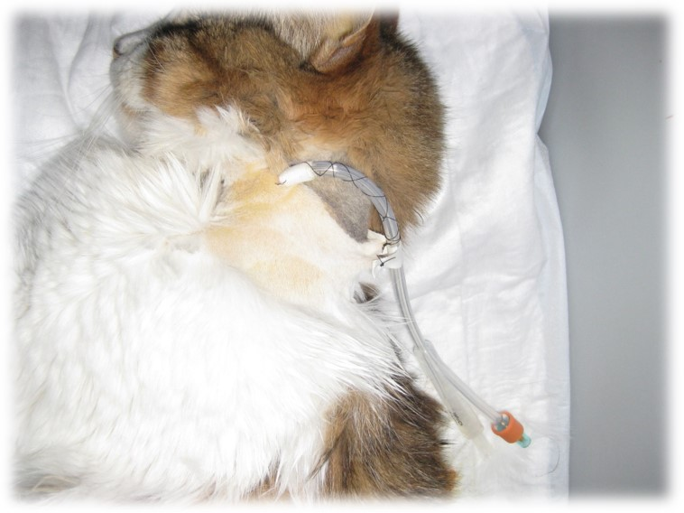
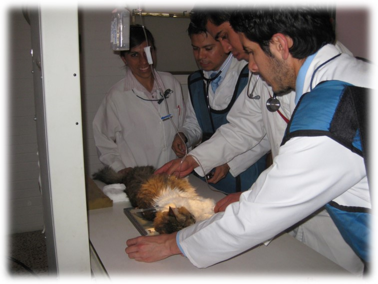
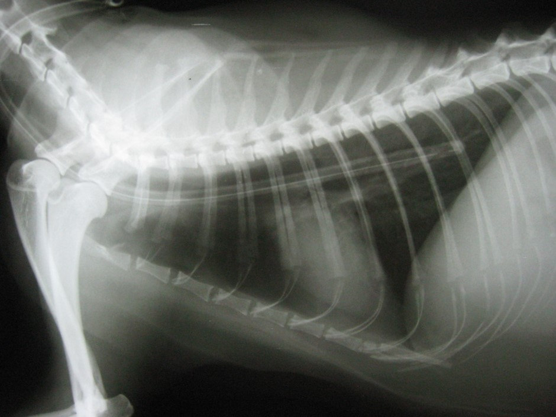
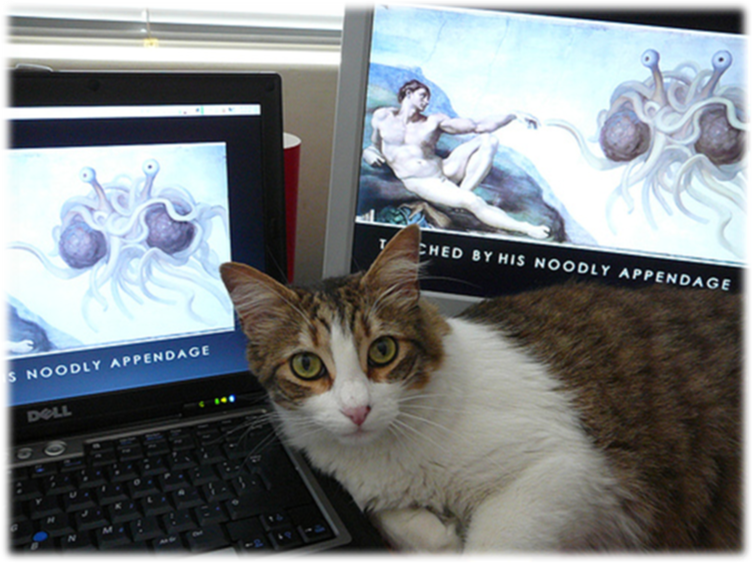

Colocación de sonda esofágica por esofagostomía

Sonda de alimentación esofágica por esofagostomía.

Toma de radiografía para observar la correcta colocación de la sonda.

Radiografía para observar la correcta colocación de la sonda (entre el 7º y 9º espacio intercostal).

En esta radiografía se observa una mala colocación de la sonda.

¡Ahora me puedes ver así, 40 días después!